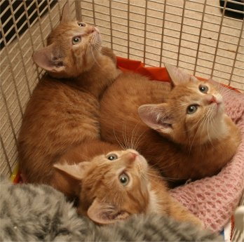

Also something new for Babyz players, a Teletubbies TV on the Babyz toyz page.

Older site news items
~~~~~~~~~~~~~~~~~~~~~~~~~~~~~
Click here to get back to the site's homepage
Click here For the 2003 updates archive
Click here For the 2004 updates archive
30 June 2005
Still brief, the sick kitten is a fair bit better but I'm still being kept busy by him and the rest of my little foster-family. So, back to Petz -- we have version 1.1.2 of Pet Workshop for you on Nicholas' Tools page -- small but good changes, thanks Nicholas :-) Also I've tweaked my LNZPro 2 tips. By the way, Babyz hexers might like to use it as an alternative to Resource Hacker -- you can open the .dll file if you make the dialogue show "choose all files". And peeps, don't forget to check out the sites on my "small is beautiful" links page, there are some real gems there.
27 June 2005
Just briefly, as I have a sick kitten to deal with at the mo'... LNZPro 2 tips for people who don't know where to edit the breed bitmap, ID number and name. Also some new links on my "small is beautiful" links page, and an updated url for Jillie's Petz Place on my main links page.
22 June 2005
LNZPro 2! YESSS! LNZPro is a brilliant tool (of course -- look who made it!) It edits .pet files as well as your .dog, .cat, .env, .toy, .clo files... Go get it from Nicholas' Tools page, you know you need it :-)
21 June 2005
Petza, at version 1.4, will trim the size of family-tree-bloated .petfiles down to the first 8 generations! You can still see the family tree in Petz games, but remember that the rest of the tree will be removed in petz with a long lineage. All the features of the earlier versions are still in place of course. Go to Nicholas' Tools page to grab it. Also I have new links on my "small is beautiful" links page.
16 June 2005
A couple of breedz for Petz 3, 4 and 5 players on my
P3,4,5 LNZ breedz page.
15 June 2005
Petza version 1.3 has been temporarily removed. There were some concerns amongst the petz community as regards the family-tree trimmer; Nicholas hopes to be able to come up with a solution soon. Meanwhile, the very handy version 1.2 is back up for you, on the usual page :-)
13 June 2005
Hear ye, hear ye!! Petza, at version 1.3, will trim the size of
family-tree-bloated .petfiles now! Go to
Nicholas' Tools page
right away, and save overbloated female petz from future corruption
:-)
Also something new for Babyz players, a Teletubbies TV on the
Babyz toyz page.
12 June 2005
Woo! Petza, at version 1.2, works for Petz II now! Go to
Nicholas' Tools page and download
now, you know you want to :-)
Also more new links on my
"small is beautiful" links page.
07 June 2005
I have for you: another big update to Petza, it's at version 1.1 now! Go to Nicholas' Tools page and grabbie grabbie. Some new links on my "small is beautiful" links page. And some updated info on a couple of my "LNZ breakdown chunks" pages. I should have mentioned all this yesterday, but Real Life got in the way -- my little Lydoe was returned to me, the poor little thing had to come back from her new home through no fault of her own and she's needed plenty of TLC.
30 May 2005
Just a small update, but important to me :-) Some lovely pictures on my May "gifts from friends" page, and some new links on my "small is beautiful" links page.
29 May 2005
A big update to Petza! Go to Nicholas' Tools page. Download, install and enjoy! Remember to back up all your petz before you start fiddling around with them :-)
25 May 2005
small update to Petza; it's a smaller download and you don't need to unzip it. If your browser corrupts the download, then grab the zipped copy. Also I've put more explanation on the page which I hope will help people who are confused, and links to working .exe files for it. It now works with my modified Babyz exe. Go to Nicholas' Tools page. Download, install and gaze with amazement at the result :-)
24 May 2005
Petza is now available for Babyz as well as Petz 3, 4, 5! Go to
Nicholas' Tools page. Download,
install and adore. The brain-sliders have been re-enabled for small pups
and kittens; remember that in Petz 5 it's your own fault if you corrupt a
mother by ageing only some of her litter..
22 May 2005
The newest Petza toy has more features for Petz 3, 4, and 5. Go to Nicholas' Tools page. Download, install and worship. Remember to remove the earlier versions before installing this one!! Also new, from me, is a modified Petz II exe which gives brain-slider users more information. It is available on the mad scientist page.
19 May 2005 Part 2
A Petz II demo which will install and play on Windows ME and XP systems is available on the mad scientist page -- go go to the same page to download also the Petz II demo fooler, which also works with Windows XP :-)
19 May 2005 Part 1
The new "update" features now available for Petz 3 non-English and Petz 4!
Go to Nicholas' Tools page --
download, install, play and then give Nicholas a huge hug -- you know you
want to!!
For people who want to edit the Petz 5 Adoption Centre, and AC or case
doors, with Tinker and then share them,
here is a special Petz 5 rez.dll
for you to edit and provide for use with other Easy-kit users.
18 May 2005
Something special and new for Petz 5 and Petz 3 players! Go see, on
Nicholas' Tools page -- download
it, try it, gasp in amazement and then kiss Nicholas' feet :-)
Also now available is the demo-fooler for Petz 3 non-English, on the
mad Scientist page, lus a couple of the Petz
3 easy-edit scenes are now also available for
Petz 3 International. And, by special
request, a stripped-down version of my Spinosaurus .lnz on
P3,4,5 LNZ breedz page
Finally, a couple of new links on my "small is lovely" links page; go see,
they have some interesting stuff :-)
09 May 2005
Okay, lessee, what've I got for you now... Ah yes, some stuff for Babyz,
and a demo-fooler for Petz 3. On the
mad Scientist page, you'll find the Petz 3
demo fooler; you should be able to find all the files that you need, but
remember to read the readme files carefully. My Babyz
Harem Sets page now includes a gold
sparkly dress; sorry it's so slow getting the sets uploaded, I have a bit
of a log-jam here with things that I need and want to do.
A tutorial with example on my
Babyz-specific page for people who are
having trouble getting crackers from their own edited cracker-boxes to
show up properly. And my
carrot-treat bag is now ported to babyz;
my little types love 'em :-)

07 May 2005
As before, I'm a bit late writing this What's New -- I keep meaning to write it once I have a proper upload done, but I've only got bits and pieces up at present, thanks to Real Life getting in the way :-) Anyway, for now, On the Nicholas' Tools page version 1.1.1 of Pet Workshop. Also the start of my Babyz Harem clothes, on the Harem Sets page. And before anyone gets outraged, it's just some fun dressing-up stuff, and it's fun to watch them disco-dancing with jewels in their navels ;-) More to come of course; I hope to have more game-foolers up tomorrow for Petz as well as more harem clothes for Babyz.
03 May 2005
I'm a bit late writing this What's New, sorry -- Real Life dragged me from the computer just as I was writing it. I do have some updates. On the Mad Scientist page, I've grouped together links to all the game-foolers; we have two new ones, thanks to SuperSwampert67. One is for Dogz 1 -- for which I copied an o-old P.F.Magic Dogz 1 page, complete with a little old animated dog, an early use of Shockwave bless 'em :-) The other fooler (plus some easy-edit playscene kits) is for Petz 4. I've also tweaked the tutorials pages slightly, removed my "tutorialbits" link because I've distributed the info more logically, made it easier to find the info on finding a pet's ID, and improved vastly the info on getting Petz II runaways back. I did write to tell the requester about that, but haven't heard back. If he's reading this and didn't get my email, then I say "go check out the PII Runaways Home info ." I'd be glad to know whether he got his son's pet fixed or not.
29 April 2005
On the Mad Scientist page, For People who are having trouble finding Petz 5, a Petz 5 fooler to keep you going until you can buy the full game. On the Sounds page, For people with dogz-only parts of Petz 3, 4 or 5, there's a bunch of sound files to enable you to hear all the sounds for dogz-based "cat" breedz. For everyone who wants to hear persian-cat sounds in their dogz game *LOL*, you'll also need the persian sounds and the special small "fix"file.
27 April 2005
Just a couple of things; I've re-jigged the menu a bit in my eternal quest to make it easy to find things. I've altered the intro to the Oddballz kits pages; I think it's now obvious that Players should grab the kits so they can have more fun, not just hexers. For Oddballz hexers, information on getting the maximum number of individual Transformations in their breedz. For Babyz hexers, I've uploaded a pre-prepared BabyzRez.dll in the "Easy Babyz" section of the Babyz Howtos page. This is the ultra, ultra easy kit for people who want to use my easy-edit method. It's more reliable than Resource Hacker :-)
26 April 2005
Woah, quite a large update today, something for most people. Pet Workshop
1.1 is up with some new features! Available as usual from
Nicholas' Tools page. Also updated
since last "what's new" are my gifts from friends.
For Babyz players, four new babes you might
like. And for Dogz 3, 4 and 5 players, Butterfly Chaser's Great Tree,
Team Creation with myself. I'll be
getting the sounds done soon I hope.
24 April 2005
Well, I had loads I wanted to get uploaded this weekend, but Real Life jumped at me again. I meant to announce yesterday that a couple of great new versions -- Pet Workshop 1.0.9 and LNZPro version 1.3 -- are now available from Nicholas' Tools page. Also updated since last "what's new" are my sisters and babyz links pages. And for people who follow my foster-cats' adventures, some new pics etc a new update there.
18 April 2005
Tinker version 1.7.1 is now available from Nicholas' Tools page. Bugfixes -- you can now save toyz properly again -- and a new feature.
17 April 2005
Tinker version 1.7 is now available from Nicholas' Tools page. Bugfixes and some new features :-)
15 April 2005
Not the big update I'd hoped for -- it's been a difficult couple of days.
But I do have some Babyz stuff; a couple of howtos on the
Babyz easy-edit page, they are help with
getting clothes/toyz to show up separately and How make your baby
permanently skinny (or fat) Work with Petz files too of course, but they
are aimed at Babyz hexers. Also four new
downloadable babyz, including a pair that
show a radical new way of making hair a little more natural-behaving.
13 April 2005 part 2
The alternative Easy Kit files are now available from my Oddballz Easy Kits page. Non-hexers can have a lot of fun with these, just as much as hexers, and if you have an Easy-kit version of Oddballz installed you will be able to download and use any Easy-kit files that hexers might want to share :-)
13 April 2005 part 1
Tinker version 1.6 is now available from Nicholas' Tools page. Fixes a little problem with the oddballz palette. I forgot to say that yesterday I also put the bunny soundfiles on the species sounds page -- previously I had them in the zips with my downloadable cotton bunny and breedable bunny. Thanks to Minibyte for pointing that out :-)
12 April 2005 part 2
Updated my Oddballz Easy-Edit packages so that all filmstrips are external and can be edited with Tinker.
12 April 2005 part 1
Tinker version 1.5 is now available from Nicholas' Tools page. Bugfixes and fantastic news for Oddballz fans -- it'll work with the external FLH/FLM files in my Easy-edit packages! Three cheers for Nicholas! *grabs Tinker and cuddles it*
11 April 2005
Yes, "tomorrow" came and went without the promised update -- the keen-eyed
amongst you, however, will have noticed that I made a large
babyz links page, put up some lovely
gifts from people which I'm extremely proud to
have, altered the front page slightly and shifted this "what's new" onto
its own page plus, for those who care, made a partial update on my Real
Life
foster-cats site.
Yes, I'm slow with the html and checking everything, but I felt it all
needed doing so everything else has had to wait... We resume our regularly
scheduled broadcast tomorrow :-)
09 April 2005
Whee, all the Oddballz external-lnz breedz are now up at the
Oddballz Editing page. I'll be
fixing up the "alternative" lnz files mentioned in the readme files as
soon as I can, to enable players not to have to swap around the
Transformation .lnz files too much. Tomorrow though I hope to have
something for petz and Babyz players.
08 April 2005
Okay, "tomorrow" slipped a bit, and it's not quite as much of an upload as
I'd hoped, but I've been doing a lot of groundwork on the Oddballz
Transformations which should be helpful when I get it all organised, and
meanwhile there is Honker on the
Oddballz Editing page along with a
file for you to grab if you're having trouble getting your edits to show
up in the Pig transforms. For people who want to make new
babyz toyz from the stuffed man toy, I've
made him show up on the shelf. That's it for today; the weekend
should really see the rest of the Oddballz breedz, plus that
collaboration breed for Petz, plus a special new baby or two for babyz
players.
06 April 2005
I got hijacked by the Babyz Community, so this time it's a special set of
babyz glasses, including a
"do-it-yourself" version. No more at the moment, but the rest of the
Oddballz easy-edits will go up tomorrow, truly, also I hope to get a
special collaboration breed for Petz games up before the weekend. You got
to give me marks for trying, anyway!
Missing asset:
ToothsomeStars2.gif
03 April 2005
Okay, it's only a couple of goodies -- more tomorrow, honest! It's a
couple more of the Oddballz Breedz
Easy-edit kits; Grinnz and Dynaroo.
Please remember to read the included readme texts carefully :-)
02 April 2005
Tinker version 1.4 is now available from
Nicholas' Tools page. Bugfixes and
great new features :-) No time for more just now, got to dash, hope to
have lots of goodies for you tomorrow
27 March 2005
Whee! Something from me for Oddballz hexers at last... the start of the
Breedz
Easy-edit kits; he main package and
the Zott and 102 breed kits are up, I'll upload the rest of the original
13 over the next few days. Also for those interested in my foster-cats,
I've got an interim update there too. I have high hopes for this coming
week as regards Time...
16 March 2005
Pet Workshop 1.0.8 is now available from
Nicholas' Tools page; fixes some
issues with negative ball sizes, extreme fuzz numbers, and empty end
sections. For those interested in my Real Life madhouse, I've managed to
do a small update
my foster-cats too...
Still not fully up to date, things really are pandemonium here.
12 March 2005
Pet Workshop 1.0.7 is now available from
Nicholas' Tools page; now you can
delete ballz, and Pet Workshop will take care of any needed re-numbering!
W00t!
11 March 2005
Thanks to Minibyte, we now have Dogz 3 and 4 conversions of Melanie's
Turtle on the
Team creations page :-)
07 March 2005
Pet Workshop 1.0.6 is now available from
Nicholas' Tools page; the fuzz
works now, at least it does for me :-) I've also got a beautiful new gift
from Kitty, it's on my
March "gifts from friends" page -- thanks!
06 March 2005
Get Pet Workshop 1.0.5 from
Nicholas' Tools page, also a public
beta of a brilliant new version of Tinker. It's a beta version, so as
always please remember to backup your files before editing, and send any
bug reports to Nicholas of course. I've also got a lovely new gift up on
my March "gifts from friends" page -- thank you,
Dani, it's lovely! And I updated my Links and
"small is lovely" links pages.
23 February 2005 Part 2
People who are having trouble with Pet Workshop crashing, get the "add-on"
from Nicholas' Tools page. Helps
sort out a problem with some video cards.
23 February 2005
Get Pet Workshop 1.0.4 from
Nicholas' Tools page. Can't stop
now, must dash, got to take some cats to the vet. Nothing serious, but
needs doing.
20 February 2005
Get Pet Workshop 1.0.3 and Tinker 1.2 from
Nicholas' Tools page Bugfixes in
Pet Workshop, and new features in both programs. For people who are
interested in the progress of my foster-cats, I've managed to update
there too...
18 February 2005
Get the latest Pet Workshop from
Nicholas' Tools page; Blind Alley
Cat Syndrome is fixed, and the Custom animations feature is fun to play
with :-)
17 February 2005 Part 2
A nice big update for Pet Workshop from
Nicholas' Tools page; works now for
Dogz and Catz II, 3, 4, 5! Also updated some links, new link on "small is
lovely" page :-)
17 February 2005
For those with Dogz 4 or Dogz 3 who don't have P5 and are impatient for
PetWorkshop to work for them, try
this fix -- there
will be a version for you very soon, but meanwhile that does work. Trust
me. I'm a mad hexer ;-)
16 February 2005 again
A small update for the new Pet Workshop from
Nicholas' Tools page -- if your
petz come out of the adoption centre with your changes on the wrong sides
of their bodies, this version corrects that problem.
16 February 2005
A new utility from
Nicholas' Tools page
-- Pet Workshop, a public beta of a work still in progress, make sure you
back up your files before editing of course. At present it edits .dog
files, not all features are enabled and some items will generate bug
reports. You can do great things with it already, though!
14 February 2005
A special request available on my
Babyz Toyz page -- Babyz bathtub shows up
in the changing table cabinet and you can have several in the game at
once, so all your babyz can take a bath at the same time. Real Life chez
Horn is at total pandemonium level, I have two more cats to care for since
the ginger trio left and
Saffy
arrived. Oh, and Happy Valentine's Day -- good grief, the middle of
February already...
10 February 2005
Nicholas has compiled a great pet
editing helpfile from my LNZ and other information; grab it from either
Nicholas' tools page or the main tutorials page. Apart from that, nothing
much here except for a bit of tidying and a small clarification update on
one of the LNZ chunks. Real Life still going like crazy here.
28 January 2005
Nicholas is back from his holidays, so there's a new version each of
Tinker and LNZPro on
Nicholas' Tools
page. As for me, the ginger trio are still filling my time as they
convalesce. They'll be leaving me soon, though; each one has been offered
a good new home.
26 January 2005
A teeny-tiny update for Babyz hexers -- a "howto" that I'd forgotten
about, on changing the food-blob colour from the jars and bowls when on
the spoon. In the Toy/Clo section of the
Tutorials, Babyz-specific, page. Nothing else -- the ginger trio have been a bit poorly, have
spent the past few days helping them get better.
20 January 2005
Kishi Kat of
The Light Fantastic
site has made a neat tutorial for those who need help with Tinker. She
intends to add to it as time goes by. For now, it's at this
direct link. Thanks, Kishi Kat! Nothing from me today, I've been kept busy by the
ginger babies...
18 January 2005
Nothing for you today; Nicholas has gone on holiday and I've been settling
in a small, frightened trio of ginger babies...

Hoping to have some things for you later this week, just my own
run-of-the-mill stuff. Nicholas promises that when he gets back he'll try
to add Oddballz support to Tinker, plus he's thought of something else you
might like.
17 January 2005
Ta-da! Babyz support now in the latest Tinker on Nicholas' page, plus a
lovely, simple way of adding new toyz to the Petz 5 toycase. Bliss! The
Oddballz palette is in place, so stay tuned, Oddballz fans. For those who
are interested, Lydoe and the people who came to meet her got on well
together, so now she's off to her
new life in a new home. I miss the little one...
16 January 2005
Latest Tinker on Nicholas' page -- works with Petz II, 3 and 4 filmstrips
also :-) Must dash, somone's coming to see my little foster-cat Lydoe
14 January 2005 Part 2
More on Nicholas' page -- an updated version of Tinker and a fantastic toy
made with his new utility :-)
14 January 2005
Today we have a pair of great new utilities! Nicholas Sherlock of
Silent Wolf Kennelz
is a programmer who listens -- and what he listened to here was my
plea for a SPR file editor. I had lots of fun beta-testing it, and am
delighted to be hosting it on the
Nicholas' tools
page. This is for Petz 5 only. But Nicholas has also made a great
LNZ-editing tool for us all, which will edit any LNZ file and extract LNZ
files also, including error-trapping for typoes etc. Brilliant.
11 January 2005
Happy New Year!!
Today I'm trying to update this site, but don't expect any exciting
downloads just yet -- all I'm doing is moving things around, a sort of
"spring clean", LOL, although you might find the updated "important
information" and "what's happening here" sections on this front page worth
a read. Got some new info in them you might find interesting. Also I've
been given a Star Adopter award, which is up on my Gifts pages; thanks,
Sarah! I should have some new things up for some of you this coming
weekend. I'm also trying to update my real-life Foster-cats site; this
past weekend several of my "babes" went to new homes...
.